Рецепти.мк
Рецепти.мк
Добредојдовте на веб страната за рецепти на Ф.И.Н.К.И.!
Предјадења / Десерти
Главни јадења
Изберете рецепт
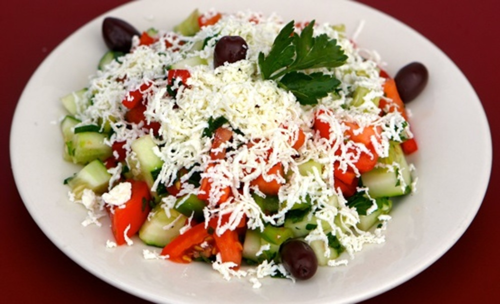
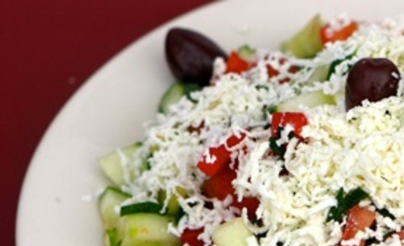
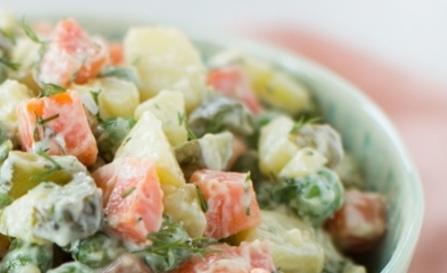
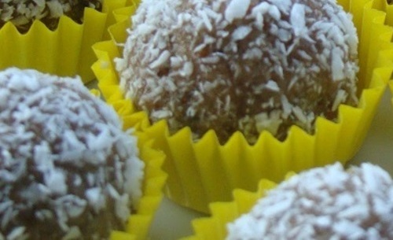
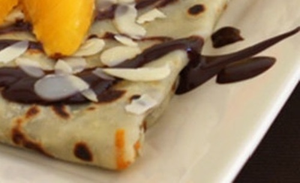
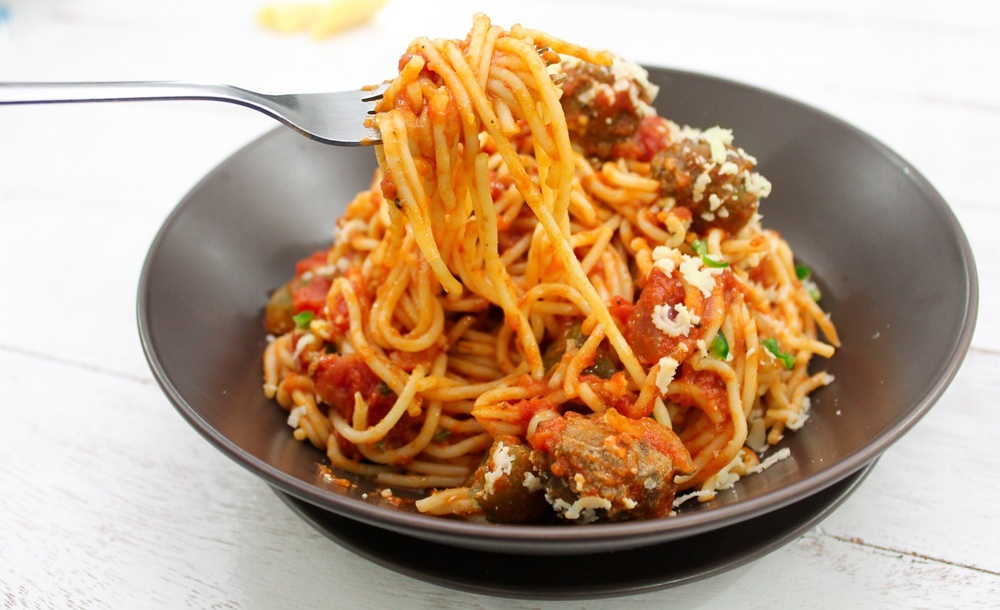
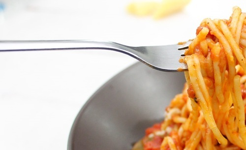
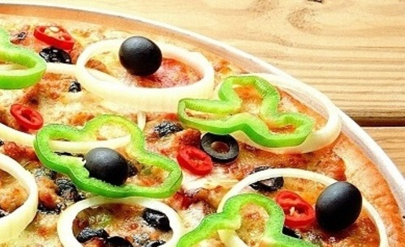
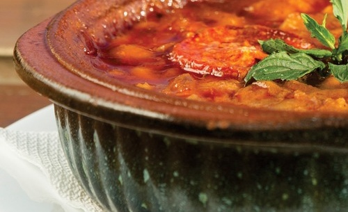
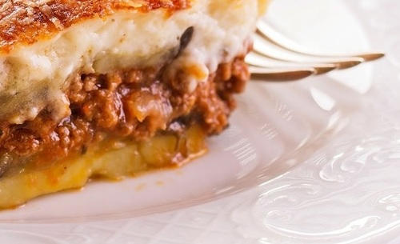
Состојки
Подготовка
1
Краставицата се лупи и се сечка на мали коцки со големина од 1 см.2
Доматите се сечкаат на коцки.3
Кромидот се сечка ситно и заедно со краставицата и доматите се ставаат во чинија.4
Салатата убаво се меша и се додава масло за јадење по вкус.5
Лутата пиперка ситно се сечка. Сирењето ситно се ренда и заедно со пиперката се додаваат врз салатата.6
Традиционално, салатата се декорира со маслинка на врвот.
<
>
<
Традиционален рецепт
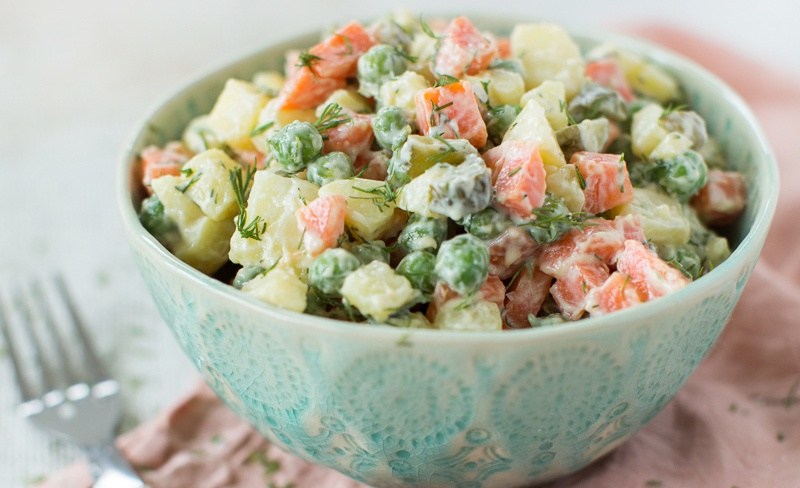
Состојки
Подготовка
1
Компирите се мијат, нелупени се варат се додека не станат премногу меки. Откако ќе се сварат се лупат и рендаат.2
Морковите, миени и нелупени, се варат се додека не станат премногу меки. Сварените моркови се лупат и сечат на мали коцки.3
Саламата се сече на коцки.4
Киселите краставички се сечат на коцки.5
Грашокот се обарува 15 минути ако не е од конзерва.6
Сечените состоки се префрлаат во поголем сад и смесата се меша.7
Постепено се додаваат мајонезот и сенфот и постојано се меша. Се додава сол и бибер по вкус.
<
>
<
Автор: Виолета Станковска
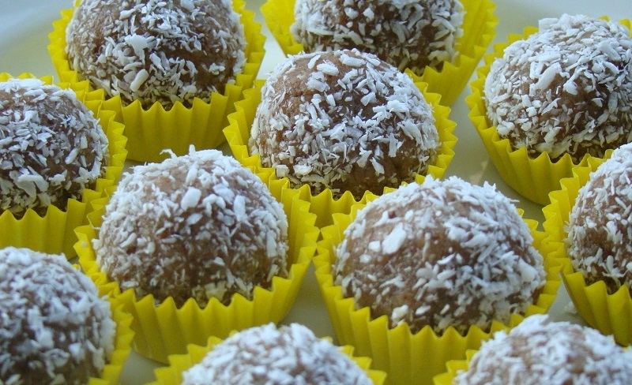
Состојки
Подготовка
1
Сите состојки од смесата се мешаат во поголем сад.2
Се прават топчиња од смесата и се валкаат во кристал шеќер.3
Топчињата се сервираат во книжни корпички.
<
>
<
Автор: Вера Јанчевска
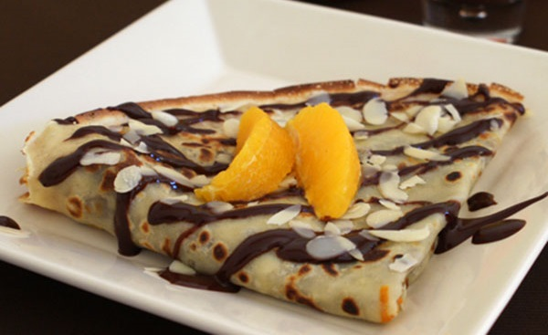
Состојки
Подготовка
1
Во поголем сад ставете ги брашното, прашокот за пециво и солта.2
Во средината на садот направете простор каде ќе ги додадете млекото и јајцето.3
Мешајте додека смесата не се соедини. По вкус се додава и кисела вода.4
Од едно јајце се добиваат околу 7 палачинки, од две јајца 14 и.т.н.5
Во тавче додатете малку зејтин и згрејте го на средно висок оган.6
Со црпалка или директно истурете од тестото врз тавчето, за секоја палачинка доволно е отприлика 1 полна црпалка тесто.7
Пржете ја палачинката додека не добие кафени нијанси од двете страни.
<
>
<
Интернационален рецепт
Состојки
Подготовка
1
Ставете на оган тавче со 50ml масло. Откако ќе се загрее маслото, додајте ги во него морковот и кромидот, ситно исечкани.2
Кога кромидот ќе добие златна боја, во тавчето ставете го и меленото месо и пржете ги состојките 5-6 минути.3
Потоа во тавчето додајте го доматното пире и лукот. Пржете додека не ја постигнете саканата густина.4
Кон крајот на готвењето зачинете го сосот со оригано, црн пипер, вегета и магдонос.5
Во тенџере со вода ставете ги шпагетите да се варат. Во водата додајте го остатокот од маслото (30ml) и малку сол.6
Кога ќе бидат готови шпагетите, можете или да ги измешате со сосот или да ги ставите шпагетите во чинии и врз нив да ставите од сосот.7
Поросете со пармезан и украсете со гранче босилек или магдонос.
<
>
<
Италијански рецепт
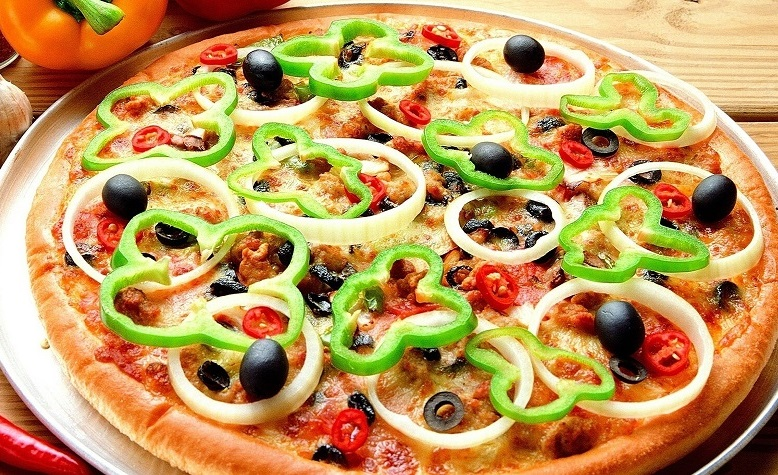
Состојки
Подготовка
1
Ставете го каменот за пица во рерна претходно загреана на 500 степени. Оставете го каменот да се грее 30 минути.2
Во сад посипете ги артичоките со масло. Ставете сол и бибер по вкус.3
На побрашнета површина, изтегнето го тестото за пица да биде околу 30 см долго, околу 1/2 см дебело.4
Преклопете помалку од половина од пицата. Побрашнете ја даската за пица. Префрлете го тестото на даската и ставете малку масло.5
Непреклопената страна од тестото посипете ја со половина од артичоките, моцарелата, рикотата, шунката и саламата, 5 см од крајот на тестото.6
Додадете и половина од ориганото и 2 лажички од маринатот.7
Крајот на тестото подигнете го и притиснете го врз тестото кон центарот.8
Преостанатата 1/4 шоља маринат посипете ја врз тестото, оставајќи граница од 1 см.9
Распределете ги преостанатите артичоки, моцарела, шунка и салама врз маринатот.10
Со лажичка додадете рикота врз топингот, па потоа распределете ги печурките и маслинките.11
Додадете го и преостанатото оригано.12
Ставете ја пицата врз каменот и печете 8 до 10 минути, додека не е крцкава. Исечете на парчиња и сервирајте.
<
>
<
Италијански рецепт
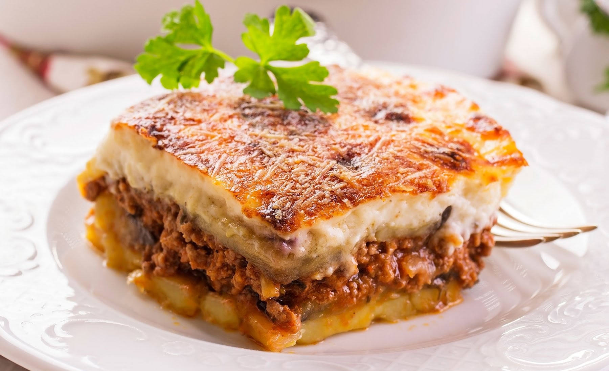
Состојки
Подготовка
1
Месото се пржи во подлабоко тавче со 100 грама зејтин и претходно ситно исечкан и пропржен кромид. При крај се додава сол, бибер и црвена пиперка.2
Компирите се лупат и се сечкаат на кругови со дебелина до 3-4 милиметри.3
Во подлабок плех со средна големина, се реди компирот, а кога сè ќе се покрие се става меленото месо.4
Одозгора се покрива со уште еден ред компири и сè се прелева со изматени 3 јајца со половина литар млеко.5
Се пече во загреана рерна на 220 степени, околу 45 минути.
<
>
<
Традиционален рецепт
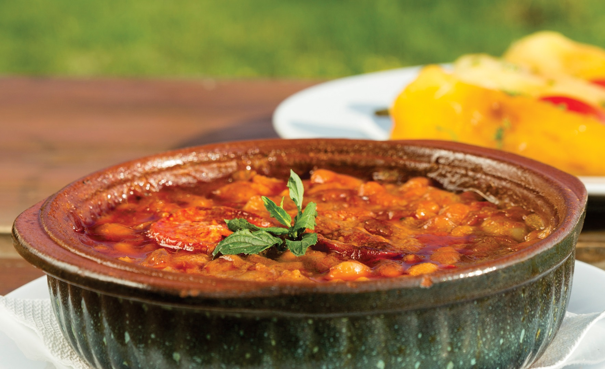
Состојки
Подготовка
1
Измијте го гравот. Во сад со вода, ставете 1 лажица сода бикарбона, ставете го гравот и оставете го неколку часа.2
Исплакнете го гравот неколку пати. Во сад со вода, на оган, ставете го да се вари заедно со цел кромид (исчистен), лукче и пиперка.3
Варете го гравот се додека не омекне.(времето на варењето зависи од староста, типот...)4
Во тавче, загрејте масло за готвење и ставете некоку лажички црвен пипер. Промешајте. Гравот исцедете го,(но не сосема), зачинете и ставете ја запршката.5
Гравот е спремен за печење. Претурете го во керамички тави и печете се додека течноста не испари.
<
>
<
Традиционален рецепт